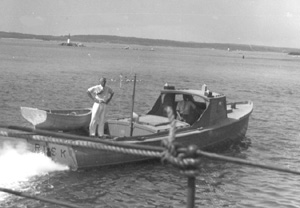

|  copyright - WHOI |
|
Columbus Iselin used Risk as transportation between the labs and his home on the Vineyard. It was also used for local science and in the Jamestown, RI, Motion Study Program. In the late 1960's, Risk was sold to Al John of North Falmouth, MA.
In the photograph, Henry Bigelow stands on the stern.